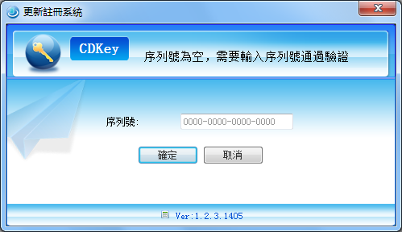
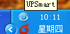
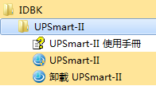

-
安�bUPSmart
- 1. �c�舭惭b程序UPSmart_setup.exe，�x�癜惭b路�酵瓿砂惭b。
- 2. �]意在Windows XP， NT 4.0/2000及Server下安�b，��先使用超��管理�T身份登��。
-
启动UPSmart
- 1. 安�b完成後，在系�y桌面�a生��用程序的快捷方式�K且在系�y�_始菜���诋a生登��快捷方式。
- 2. �]意系�y在用�舻卿�windows後，可以�O置�樽������釉�服�粘绦颉�
- 3. ��件���俞幔�在系�y�D�����瓤梢钥吹匠绦��D�耍�程序主界面如下�D，�K且首次���有枰���入��件序列��，如果未��入序列��，��件��定�r提示��入序列��。
- 
- 4. ��入正�_序列��後，���@示出��件的主界面，�K且在任���谥���出�F如下界面：
-
|  | UPSmart�cUPS�B接正常 |
 | UPSmart�cUPS通信��常 |
-
卸�dUPSmart
- 若要卸�dUPSmart，�t在UPSmart程序�M�Y�x��"卸�dUPSmart"�K�_�J即可完成�h除。
-
- 
- UPSmart:�c�翎幔��M入主程序。
- 卸�dUPSmart:�c�翎幔��M入卸�d程序。